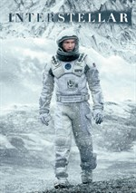

first of all I need to clarify that this is a personal ranking based on my own taste.
The movies will be chronogically ranked!!
| movie | poster | type | produced in |
|---|---|---|---|
| The shawshank redemption | |
drama | 1994 |
| Pursuit of happines | Biography/drama | 2006 | |
| The dark knight | |
action | 2008 |
| Seven pounds | drama | 2008 | |
| Inception | |
science fiction/thriller | 2010 |
| Shutter island | |
science fiction/thriller | 2010 |
| Interstellar |  | science fiction | 2014 |
The Shawshank Redemption is a 1994 American drama film written and directed by Frank Darabont, based on the 1982 Stephen King novella Rita Hayworth and Shawshank Redemption.
It tells the story of banker Andy Dufresne (Tim Robbins), who is sentenced to life in Shawshank State Penitentiary for the murders of his wife and her lover, despite his claims of innocence.
A quote from the movie:"Hope is a dangerous thing. Drive a man insane."

Back to top of page
The Pursuit of Happyness is a 2006 American biographical drama film directed by Gabriele Muccino and starring Will Smith as Chris Gardner, a homeless salesman.
Smith's son Jaden Smith co-stars, making his film debut as Gardner's son, Christopher Jr. The screenplay by Steven Conrad is based on the best-selling 2006 memoir of the same name written by Gardner with Quincy Troupe.
It is based on Gardner's nearly one-year struggle being homeless. The unusual spelling of the film's title comes from a mural that Gardner sees on the wall outside the daycare facility his son attended.
A quote from the movie:"Hey. Don't ever let somebody tell you ,you can't do something. Not even me. All right?"
Back to top of page
The Dark Knight is a 2008 superhero film directed by Christopher Nolan from a screenplay he co-wrote with his brother Jonathan.
Based on the DC Comics superhero Batman, it is the sequel to Batman Begins (2005) and the second installment in The Dark Knight Trilogy.
In the film's plot, the superhero vigilante Batman, Police Lieutenant James Gordon and District Attorney Harvey Dent form an alliance to dismantle organized crime in Gotham City.
A quote from the movie:"If it's so simple, why haven't you done it already?"

Back to top of page
Seven Pounds is a 2008 American drama film directed by Gabriele Muccino starring actor Will Smith as a man who sets out to change the lives of seven people.
A quote from the movie:"In seven days, God created the world. And in seven seconds, I shattered mine."

Back to top of page
Back to top of page
Inception is a 2010 science fiction action film written and directed by Christopher Nolan, who also produced the film with Emma Thomas, his wife.
The film stars Leonardo DiCaprio as a professional thief who steals information by infiltrating the subconscious of his targets.
He is offered a chance to have his criminal history erased as payment for the implantation of another person's idea into a target's subconscious.
A quote from the movie:"You musn't be afraid to dream a little bigger, darling."
Back to top of page
Shutter Island is a 2010 American neo-noir psychological thriller film directed by Martin Scorsese and written by Laeta Kalogridis, based on the 2003 novel of the same name by Dennis Lehane.
Leonardo DiCaprio stars as Deputy U.S. Marshal Edward "Teddy" Daniels, who is investigating a psychiatric facility on Shutter Island after one of the patients goes missing.
A quote from the movie:"You're Smarter Than You Look, Marshall. That's Probably Not A Good Thing.?"
Back to top of page
Interstellar is a 2014 epic science fiction film co-written, directed and produced by Christopher Nolan.
It stars Matthew McConaughey, Anne Hathaway, Jessica Chastain, Bill Irwin, Ellen Burstyn, Matt Damon, and Michael Caine.
Set in a dystopian future where humanity is struggling to survive, the film follows a group of astronauts who travel through a wormhole near Saturn in search of a new home for mankind.
A quote from the movie:"Love is the one thing that transcends time and space."
Back to top of page